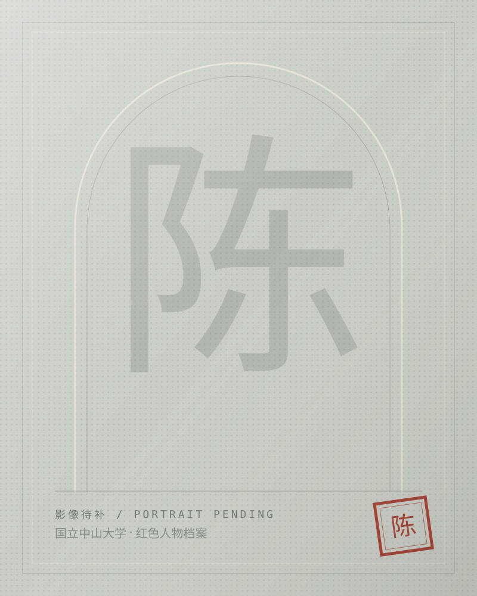
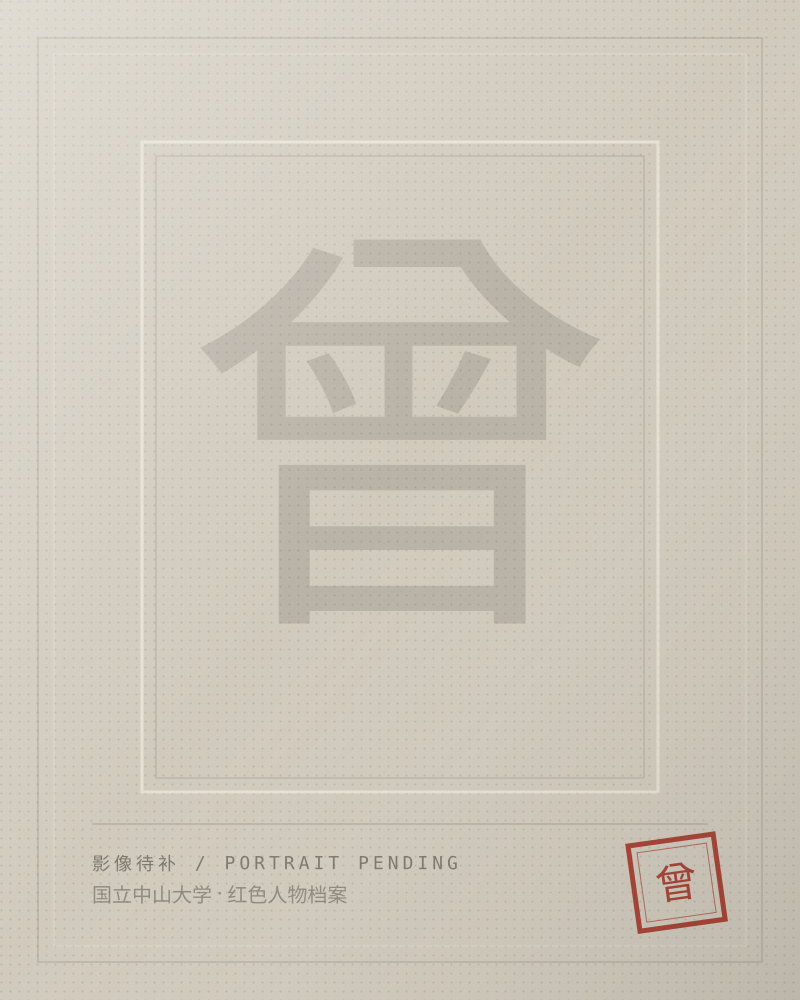
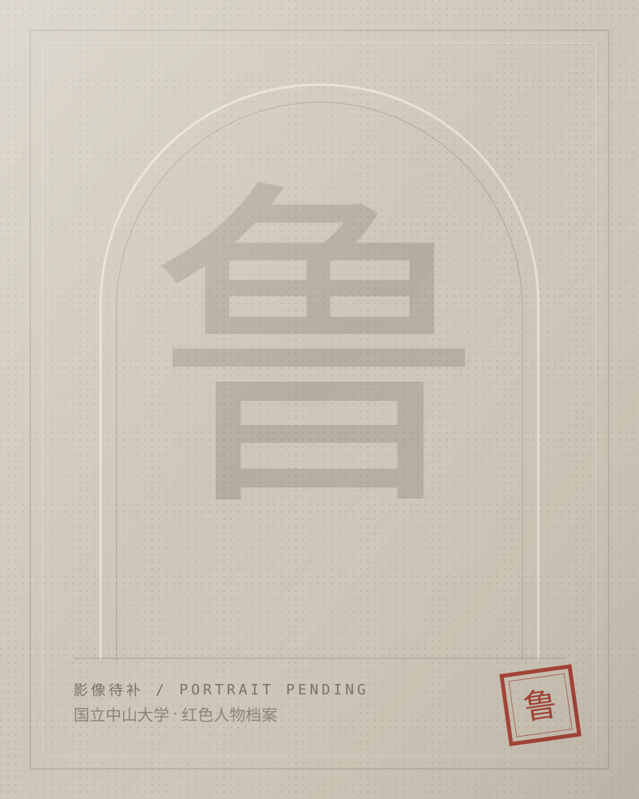
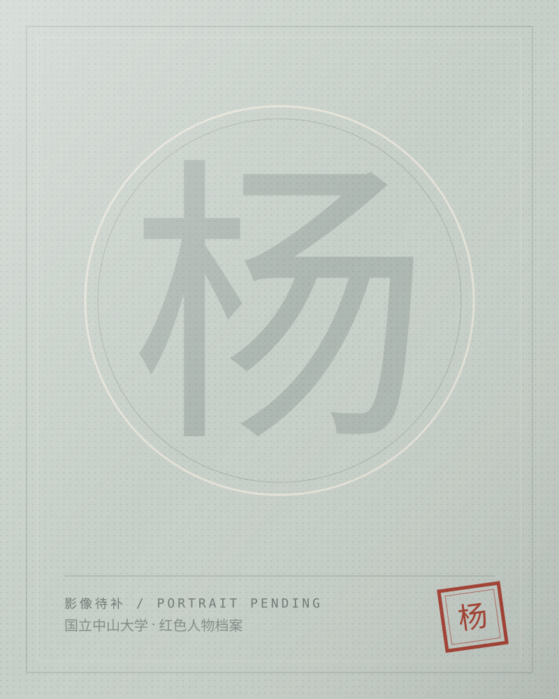
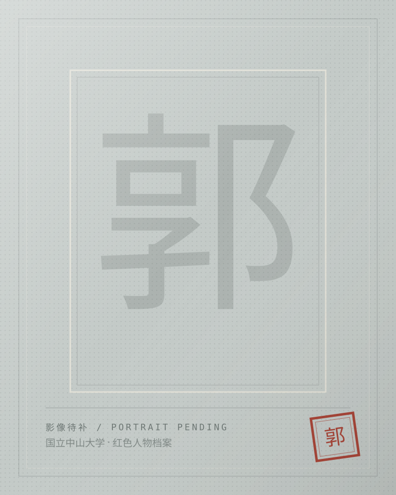
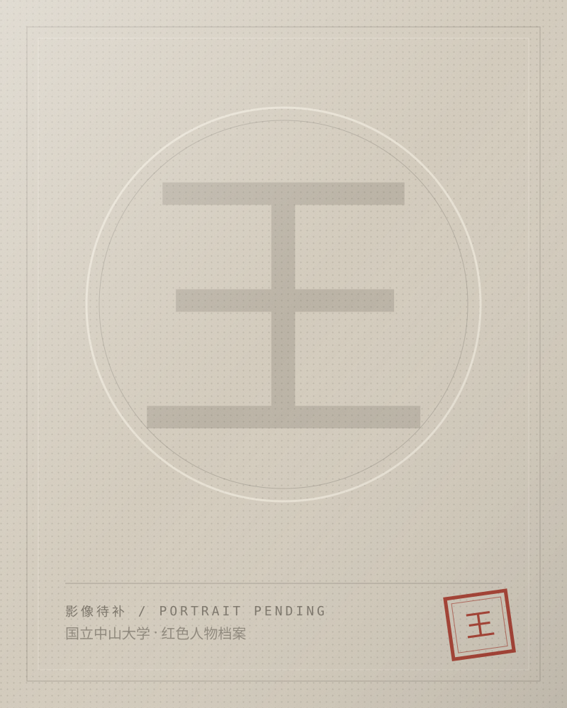

SCENE 01 / 1924 — 1927
建校与觉醒
广东大学创办，1926 年改名国立中山大学。新学生社、妇女解放协会等团体在校园里生长，青年把“读书”与“救国”放在同一张课表上。
场景文案为框架样张，史实与引文待最终核对。
SYSU · RED ARCHIVE / 1924 — 1949
档案未启封 / CLOSED FILE
青春留名
按下印章 · 开启档案
寻找中大的红色追光者
一页纸，一个人。请沿着编号继续往下翻。
寻找中大的红色追光者。从一张学籍卡、一封油印传单、一次没有退路的选择开始，重新认识那些曾在同一座校园里读书、教书、争论的人。



寻找中大的
红色追光者
Youth · Choice · Responsibility
一页纸，一个人。
请沿着编号继续往下翻。
向下，进入档案室
OPEN FILE / 2026
01序 / PREFACE
当校史被折成一页页档案，名字就不再只是名字。
1924 年，广东大学在广州创办；1926 年，为纪念孙中山先生，改名国立中山大学。此后二十余年，校园被时代反复推搡：北伐、政变、抗战、西迁、复员。有人离开，有人留下，有人把课堂搬进战场。
我们想做的，不是把历史压缩成一段结论，而是把选择重新展开：一个学生为什么走上街头，一位教师为什么在深夜收拾行李，一群年轻人为什么在明知危险时仍然向前。
请把这张网页当作一间可以走进去的档案室。翻开卡片，读他们的故事；拖动年代尺，看时间如何把人推到路口；最后，留下你自己的那一页。
02名录 / INDEX
1904 — 1928 · 广东佛山
学生 · 烈士
她把名字改成“铁军”，也把一生交给了革命。
1910 — 1995 · 广东惠阳
学生 · 将领
从校园示威到东江敌后，他把课堂搬进了战场。

NO. 0031915 — 1991 · 广东广州
校友 · 将领
他与曾生既是校友，也是东江纵队并肩的搭档。
1881 — 1936 · 浙江绍兴
教师 · 作家
他在中大只待了几个月，却留下了知识分子风骨的注脚。

NO. 0051892 — 1978 · 四川乐山
教师 · 学者
他把“创造社”式的锋芒带进课堂，也在这里递交了入党申请。

NO. 0061901 — 1969 · 湖北黄冈
教师 · 经济学家
在坪石的竹棚教室里，他讲《资本论》。
NO. 007 / PENDING
换一个关键词，或把筛选恢复为“全部”。也可以到尾声，留下你自己的那一页。
经过的年份会依次点亮。停在某一年，看看这一年有谁进入档案。
03时代 / SCENES
SCENE 01 / 1924 — 1927
广东大学创办，1926 年改名国立中山大学。新学生社、妇女解放协会等团体在校园里生长，青年把“读书”与“救国”放在同一张课表上。
场景文案为框架样张，史实与引文待最终核对。
SCENE 02 / 1927 — 1937
“四一五”之后，校园里的公开集会转入地下。鲁迅辞职离开，仍有学生把传单藏进书页；1935 年“一二·九”运动爆发，广州学生再次走上街头。
场景文案为框架样张，史实与引文待最终核对。
SCENE 03 / 1937 — 1945
广州沦陷后，中大西迁云南澄江，后又迁往粤北坪石。竹棚作教室，油灯下备课；王亚南在简陋校舍里系统讲授《资本论》。
场景文案为框架样张，史实与引文待最终核对。
SCENE 04 / 1945 — 1949
抗战胜利后，中大复员广州。有人回到书桌，有人继续奔走。1949 年广州解放，档案没有结束，只是翻到了新的一页。
场景文案为框架样张，史实与引文待最终核对。
04图谱 / SPIRIT
点左侧任意一个词，查看相连的人物。
回到全部档案05留名 / YOUR PAGE
他们留下了名字，也留下了没有写完的问题。现在，这张空白的档案卡交给你。你可以认真写，也可以只看看它长什么样。
生成后可保存为 PNG；下次回到本页，浏览器会记得你写下的内容。
MY ARCHIVE CARD
求真者
把青春写进更大的事情里。